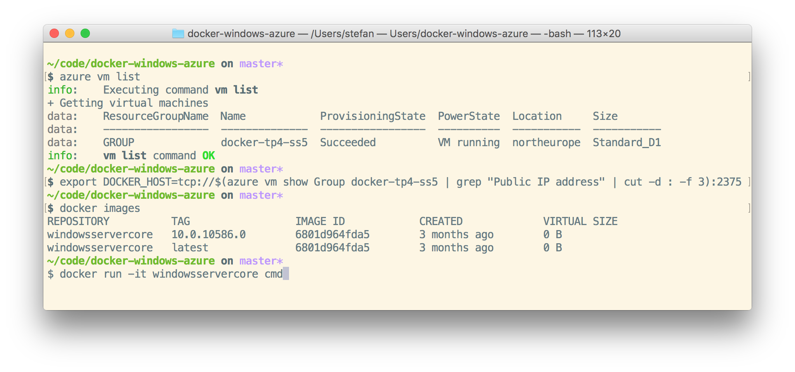
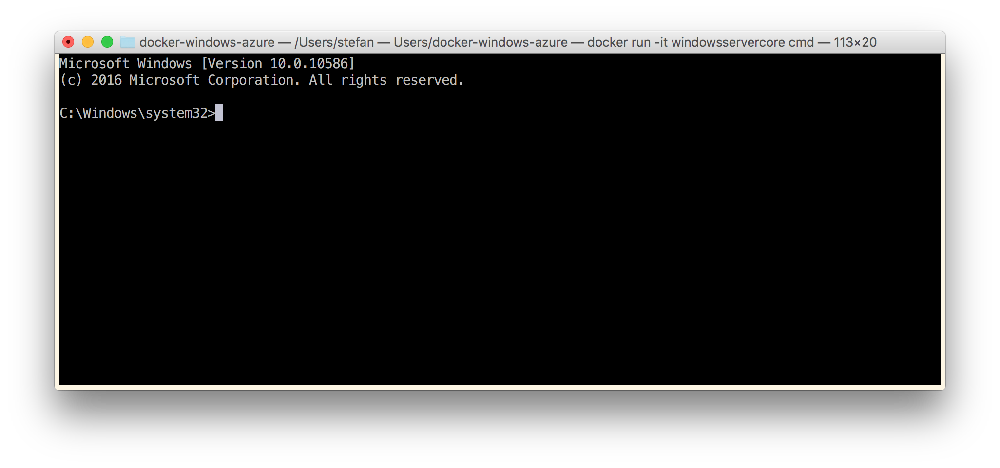

Over the weekend I had a look at how easy it is to get in touch with Docker on Windows. But this time with the Windows Docker Engine in mind. In this blog post I show you how to run a Windows Docker Engine in a VM in Azure.
The Docker Engine has an API that is compatible between all platforms. So you can even work from your Linux, Mac or Windows notebook and build and run Windows Containers in that remote VM.
So let's get started. The Windows Docker Engine is a work in progress, but it's really worth to have a closer look at it right now. It is available with the Windows Server 2016 Technical Preview 4, or TP4 for short.
To avoid building own VM's locally or installing it on bare metal we just use the prebuilt TP4 VM in Azure.
Just with a click
A really nice feature is the Deploy to Azure button. I have found a good template at the azure-quickstart-templates repo and enhanced it a little bit to have more Docker tools pre-installed. For details have a look at my docker-windows-azure repo.
If you have an account for Microsoft Azure you can click on the following button to create the VM with this template. And if not, there also is a short trial period where you can test-drive Azure for some weeks.

Azure CLI
If you have the Azure CLI installed you also can spin up the Windows Docker Engine VM from the command line.
The command takes the JSON template file from the docker-windows-azure repo and adds the parameters that are needed to customize the VM and in which region it should be started.
azure group deployment create Group docker-tp4 \
--template-uri https://raw.githubusercontent.com/StefanScherer/docker-windows-azure/master/azuredeploy.json \
-p '{
"adminUsername": {"value": "docker"},
"adminPassword": {"value": "Super$ecretPass123"},
"dnsNameForPublicIP": {"value": "docker-tp4"},
"VMName": {"value": "docker-tp4"},
"location": {"value": "West US"}
}'
Connect to the Windows Docker Engine
Now that the VM is up and running in Azure we want to use it. So we have to connect to the Windows Docker Engine.
There are several ways to do that.
- Use RDP to connect to the VM and use the Command Shell there to run docker commands locally in the VM.
- Use WinRM to login to the VM. This connection is protected with a self-signed certifcate that is created on startup. But I had some trouble with the Go/Ruby WinRM clients for OSX, so I also added OpenSSH.
- Use SSH to login to the VM. Just grab the FQDN or the IP of the VM and ssh into it. Then you also can run docker commands locally in the VM. Add your public SSH key for password-less logins.
- Use the Docker API running at HTTP port 2375 to connect from your notebook. Then you can remote control the Windows Docker Engine from your Windows, Linux or Mac client.
Remote Docker API
I'll show you the last method of the list to connect your local Docker client to the remote Windows Docker Engine.
Please notice that using the unsecure HTTP port 2375 is not recommended. Securing the Docker port with a TLS certificate is part of a future blog post. There also is some good advice in Docker for windows on Azure VM : Securing the host and TLS from Prajeesh Prathap.
I hope that docker-machine can do this step for you in the near future. It can generate such certs and upload them as well can help you setting the environment variables for the Docker Client.
But for now we just set the environment variables manually.
You need the full qualified domain name (FQDN) of your VM in Azure or at least the public IP address. In combination with the azure cli you can retrieve the IP address and set all the environments in a Linux/Mac/Cygwin shell with the following commands.
unset DOCKER_MACHINE_NAME
unset DOCKER_TLS_VERIFY
unset DOCKER_CERT_PATH
export DOCKER_HOST=tcp://$(azure vm show Group docker-tp4 | grep "Public IP address" | cut -d : -f 3):2375
The three unset commands are just for the case that you already use docker-machine with TLS for some other VM's or machines in the Cloud. This just turns off the TLS checks in the Docker Client for now to connect to the Windows Docker Engine.
For other shells like PowerShell or CMD shell it is the same. Just delete all DOCKER_ environment variables and set the DOCKER_HOST environment variable to tcp://ip-of-your-tp4-vm:2375.
Now we can check that the Docker Client really talks to our new Windows Docker Engine. So check which Docker images are available with this command
docker images
And yes, there is the windowsservercore Docker image which is the base image to work with Docker on Windows.

Now it is time to run the first Windows Docker container. We just run an interactive container to get a cross-platform feeling if your are working on a Linux or OSX machine.
docker run -it windowsservercore cmd
After the Docker container has started your OSX terminal turns into a Window command shell and you are in a cmd prompt running in a Windows Container in Azure:

Let's look around inside that container. Go to C:\ and check the files there. List all processes. You won't find much processes inside it as well as there is no Docker Engine inside. You really are working inside a Windows Container now.
Just type exit to stop the Windows Container again and you are back in your local terminal.
Next steps
All the normal Docker commands like docker build and docker run can be used from your local Notebook.
You also can use docker search and docker pull to pull some prebuilt Docker Images from Microsoft.
Now it is time to build the first Windows Docker images and run them later on. As an inspiration you can have a look at some Dockerfiles for Windows at one of these places
- brogersyh/Dockerfiles-for-windows
- StefanScherer/dockerfiles-windows
- Create a Node.js Container image for Windows
If you find this blog post useful, just share it with your friends and colleages. Please leave a comment if you have questions or improvements.